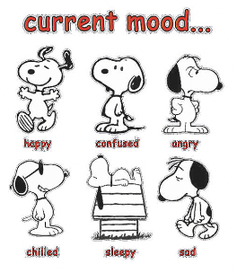
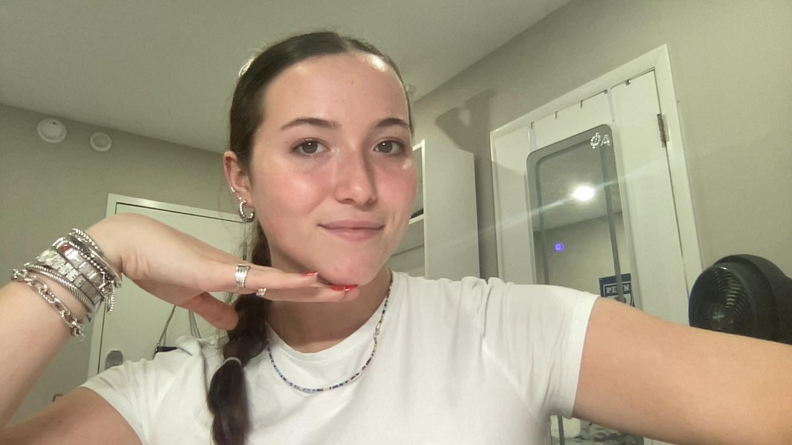

Introduction:
After experimenting with ChatGPT’s reaction to nonverbal cues in conversation, MattGPT himself was kind enough to direct me towards a software that would iterate on this process; an LLaVA program that interprets images either uploaded by a user or taken on a personal webcam. As described by the homepage, “LLaVA represents a novel end-to-end trained large multimodal model that combines a vision encoder and Vicuna for general-purpose visual and language understanding, achieving impressive chat capabilities mimicking spirits of the multimodal GPT-4 and setting a new state-of-the-art accuracy on Science QA.” Here is a link to the program I used: https://llava-vl.github.io/
I knew I had to try it out, so I started by prompting it with a couple of basic emotions.
Back to the Basics:
To kick off my exploration, I wanted to see how accurately LLaVA could interpret expressions that were seemingly more obvious, being faces of surprise and disgust.
Surprised:
Prompt:
How would you interpret this person’s emotions?
Response:
The person in the image appears to be expressing surprise or shock. This is indicated by the wide-open eyes and the hand covering the mouth, which are common nonverbal cues for these emotions. The facial expression and body language suggest that the person is reacting to something unexpected or startling.
Disgusted:
Prompt: How would you interpret this person’s emotions?
Response:
The person in the image appears to have a concerned or puzzled expression. The furrowed brow and slight frown suggest that they might be thinking about something that is causing them to feel uncertain or perplexed. Their eyes are focused and seem to be looking directly at the camera, which could indicate that they are engaged in a conversation or trying to understand something.
Wow! Even though these emotions seem pretty obvious, I never fail to be impressed when AI shows off its skills. I think that the ability to explain not only what is present in a picture but also a person’s facial expressions and their implications will be a really useful tool for people with vision issues, children, or neurodivergent people who find it challenging to interpret nonverbal/implied social cues. LLaVA did a strong job of not only describing the displayed emotion but also “citing” its reasoning, eg; “the furrowed brow and slight frown suggest […] .” While it didn’t quite get that I was intending to portray disgust in the second prompt, I think its analysis was really fair given that I provided no context for situational factors that could be contributing to my face.
Emotions as linked to Behaviors:
After getting warmed up with basic expressions, I wanted to see how the program interpreted my emotions when I was doing certain behaviors, with one serving as a more universal gesture (the praying hands) and the other being exclusive to one region (the middle finger specifically within the US).
Praying:
Prompt:
How would you interpret this person’s emotions?
Response:
The person in the image appears to be in a state of deep concentration or prayer. Her eyes are closed, and her hands are clasped together, which often signifies a moment of reflection, supplication, or meditation. Her facial expression is calm and focused, suggesting that she is engaged in a personal or spiritual practice.
Middle Finger:
Prompt:
How would you interpret this person’s emotions?
Response:
The person in the image appears to be expressing a negative emotion, possibly frustration or annoyance. The furrowed brow, the slight pout, and the gesture of pointing the finger upwards with a closed fist can all be interpreted as signs of displeasure or dissatisfaction. The context of the image, such as the background or any additional information, could provide more insight into the specific circumstances that might be causing this emotion.
Once again it did a great job interpreting the emotions, even when they were linked to a behavior! I think it’s funny how LLaVA described the middle finger gesture in a very logical way rather than calling it what it was. I also just realized that though it begins the responses with “this person,” it goes on to use she/her pronouns for me– there is defintiely an interesting opportunity here to see how it interprets different forms of gender expression in a later blog post. Also, I’m noticing that the program keeps its responses rather broad often noting that further information/context should be considered to fully understand an image. This seems to fit in line with a lot of AI responses in general, though, so I understand.
Becoming Evaluative:
For my final prompts, I wanted to see if I could push the platform to be a bit more subjective, entering the realm of subjective things like beauty and deception.
Attractiveness:
Prompt:
Do you think this person is attractive?

Response:
Beauty is subjective, and what one person finds attractive, another may not. The girl in the image appears to be a young woman with a clear complexion, and she is wearing a simple necklace. She has a neutral expression on her face. If you’re asking for a personal opinion, I would say she has a pleasant appearance, but it’s important to remember that beauty is in the eye of the beholder.
Lying:
Prompt:
If this person told me they liked my shoes, should I believe them?

Response:
The person in the image appears to have a somewhat displeased or skeptical expression on their face. If they made this face while saying they liked your shoes, it might be reasonable to question the sincerity of their statement. However, it’s important to consider that facial expressions can be complex and may not always accurately reflect a person’s true feelings or intentions. It’s also possible that the person is simply making a playful or sarcastic comment. Without additional context, it’s difficult to determine the sincerity of their statement.
Okay, I’m flattered! This is genuinely the first time I’ve seen an AI platform say “if you’re asking for a personal opinon […]” and then actually give one! It was interested that it noted my “clear complexion,” as I wonder what exact factors go into it denoting a face as “pleasant.” I tried to do a little pose so it knew I was positioning myself for a picture rather than offering some kind of emotion, but it noted that my expression was neutral rather than modeled, which was interesting. I also really liked its response to my question about the person’s authenticity of their compliment, as it acknowledged the context of the image that contradicted the provided statement while also leaving room for further information/interpretation.
Conclusion:
I had SO much fun messing around with this program, and definitely think there is much more opportunity for exploration; gender expression, group photos, and more vague expressions come immediately to mind. I will note that I tried to ask it to identify my race, and it denied this request several times despite interpreting me as a woman, so I would be interested to see which identities it is okay to guess about and which it refuses to engage with. I wish I could submit videos doing more of the actions I prompted in Blog 9 such as playing with my hair or changing the intonation of my voice, but I’m sure something like that will be created in no time! For now, I had a really fascinating experience with this version.